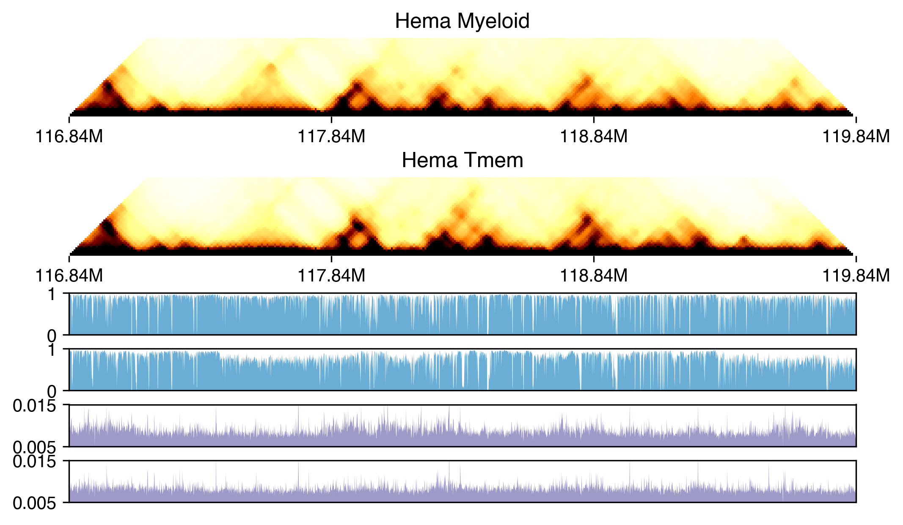
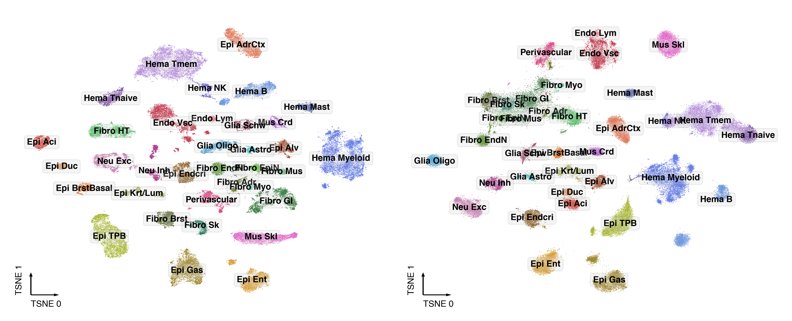
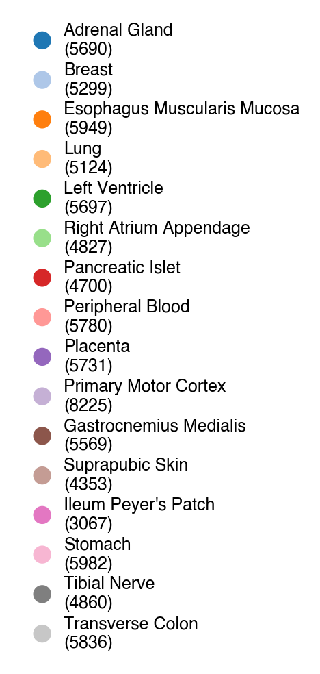

Cell atlas overview: joint mC + 3C clustering (Fig 1A,C,D,E)#
Part of the Fig. 1 chapter — see it for the panel-by-panel map. The first code cell sets ENTEX_ROOT and activates the no-overwrite guard (see the Reproduction guide). Outputs shown are the author’s original run.
📥 Required input files#
This notebook reads the following files (paths resolve from ENTEX_ROOT/REF_ROOT; the setup cell sets them). See the chapter’s inputs.md for RAW-vs-derived tags.
f'{indir}L1color.tsv'· metadata: colorf'{indir}tissuecolor.tsv'· metadata: colorf'{REF_ROOT}/hg38/gencode/v30/gencode.v30.annotation.gene.flat.tsv.gz'· ref: gencodef'{cooldir}{ct}/{ct}.Q.cool'· contacts (cool)f'{indir}clustering/merged/5kCG100k3C_summary.h5ad'· joint summary objf'{indir}clustering/merged/L1/5kCG100k3C_embed.h5ad'· embedding h5adf'{indir}clustering/merged/L1/5kCG_lsi.h5ad'· raw embeddingf'{indir}clustering/merged/L1/100k3C_pca.h5ad'· raw embeddingf'{outdir}5kCG100k3C_summary.tsv.gz'· joint summary objf'{outdir}L2/{ctname}/5kCG100k3C_embed.h5ad'· embedding h5adf'{outdir}L2/{ctname}/5kCG_embed.h5ad'· embedding h5adf'{outdir}L2/{ctname}/100k3C_embed.h5ad'· embedding h5adf'{indir}clustering/tissue/L1/{t}/5kCG100k3C_embed.h5ad'· embedding h5adf'{indir}clustering/tissue/L1/{t}/mCG_5kb_lsi.h5ad'· raw embeddingf'{indir}clustering/tissue/L1/{t}/HiC_100kb_pca.h5ad'· raw embeddingf'{outdir}5kCG100k3C_summary.csv.gz'· joint summary objf'{indir}subtype_meta.tsv'· metadata
# === Reproduction setup — edit ENTEX_ROOT / REF_ROOT for your machine ===
import os, sys
ENTEX_ROOT = os.environ.get('ENTEX_ROOT', '/large_storage/zhoulab/zhoujt/project/ENTEx')
REF_ROOT = os.environ.get('REF_ROOT', '/large_storage/zhoulab/ref')
BOOK_ROOT = os.environ.get('BOOK_ROOT', f'{ENTEX_ROOT}/analysis/HumanCellEpigenomeAtlas')
sys.path.insert(0, BOOK_ROOT)
os.chdir(f'{ENTEX_ROOT}/analysis') # original working directory
import repro_guard # no-overwrite guard (default: skip existing)
from glob import glob
import anndata
import matplotlib as mpl
import matplotlib.pyplot as plt
import numpy as np
import pandas as pd
import scanpy as sc
import scanpy.external as sce
import seaborn as sns
from ALLCools.clustering import *
from ALLCools.integration.seurat_class import SeuratIntegration
from ALLCools.plot import *
from sklearn.metrics import pairwise_distances, roc_auc_score
from sklearn.preprocessing import normalize
import warnings
warnings.filterwarnings("ignore")
mpl.style.use("default")
mpl.rcParams["pdf.fonttype"] = 42
mpl.rcParams["ps.fonttype"] = 42
mpl.rcParams["font.family"] = "sans-serif"
mpl.rcParams["font.sans-serif"] = "Helvetica"
indir = f'{ENTEX_ROOT}/'
outdir = f'{indir}clustering/merged/'
L1_meta = pd.read_csv(f'{indir}L1color.tsv', sep='\t', header=0, index_col=0)
L1_meta = L1_meta.drop(['c35','c36'], axis=0)
L1_color = L1_meta['color'].to_dict()
L1_annot = L1_meta['L1_abbr'].to_dict()
L1_color.update({L1_annot[k]: L1_color[k] for k in L1_annot if k in L1_color}) # also key by name
tissue_meta = pd.read_csv(f'{indir}tissuecolor.tsv', sep='\t', header=0, index_col=0)
tissue_color = tissue_meta['color'].to_dict()
tissue_annot = tissue_meta['tissue_annot'].to_dict()
tissue_color.update({tissue_annot[k]: tissue_color[k] for k in tissue_annot}) # also key by annot name
Example in Fig1#
leg = pd.Index(['c0', 'c1'])
cooldir = f'{indir}loop/majortype/'
gene_meta = pd.read_csv(f'{REF_ROOT}/hg38/gencode/v30/gencode.v30.annotation.gene.flat.tsv.gz', sep='\t', header=0)
gene_meta['gene_id_idx'] = gene_meta['gene_id'].str.split('.').str[0]
gtmp = 'CD3D'
lslop, rslop = 1500000, 1500000
chrom, start, end, strand = gene_meta.loc[gene_meta['gene_name']==gtmp, ['chrom', 'start', 'end', 'strand']].iloc[0]
if strand=='+':
tss = start
else:
tss = end
ll, rr = (tss - lslop), (tss + rslop)
print(chrom, ll, rr)
resl = 10000
loopl, loopr = (ll//resl), (rr//resl)
print(loopl, loopr)
## Load cell type Q
import cooler
from scipy import ndimage as nd
dstall = []
for ct in leg:
cool = cooler.Cooler(f'{cooldir}{ct}/{ct}.Q.cool')
Q = cool.matrix(balance=False, sparse=True).fetch(chrom).tocsr()
tmp = Q[loopl:loopr, loopl:loopr].toarray()
tmp = nd.rotate(tmp, 45, order=0, reshape=True, prefilter=False, cval=0)
dstall.append(tmp)
print(ct)
import pysam
from scipy.sparse import csr_matrix
def load_allc(ct, chrom, start, end):
global indir
allc_path = f'{indir}merged_allc/L1/CGN/{ct}.CGN-Merge.allc.tsv.gz'
# allc_path = f'{indir}merged_allc/L1/CHN/{ct}.allc.tsv.gz'
idx, data_mc, data_cov = [], [], []
with pysam.TabixFile(allc_path) as allc:
allc_lines = allc.fetch(chrom, start+1, end)
for line in allc_lines:
_, pos, _, context, mc, cov, *_ = line.split("\t")
# if context[1] in 'GN':
# continue
pos, mc, cov = int(pos), int(mc), int(cov)
idx.append(pos-start-1)
data_mc.append(mc)
data_cov.append(cov)
return np.array([idx, data_mc, data_cov])
start = loopl * resl
end = loopr * resl
data_mc_row, data_mc_col, data_mc_data = [], [], []
data_cov_row, data_cov_col, data_cov_data = [], [], []
for i,ct in enumerate(leg):
idx, tmp_mc, tmp_cov = load_allc(ct, chrom, start, end)
posfilter = np.ones(len(idx)).astype(bool)
# for bed in rm_list:
# for xx,yy in bed[chrom]:
# posfilter[np.logical_and(idx>=xx, idx<=yy)] = False
# print(np.sum(posfilter)/len(posfilter))
# idx = idx[posfilter]
# tmp_mc = tmp_mc[posfilter]
# tmp_cov = tmp_cov[posfilter]
data_mc_row.extend(np.zeros(len(idx))+i)
data_mc_col.extend(idx)
data_mc_data.extend(tmp_mc)
data_cov_row.extend(np.zeros(len(idx))+i)
data_cov_col.extend(idx)
data_cov_data.extend(tmp_cov)
print(ct)
data_mc_cg = csr_matrix((data_mc_data, (data_mc_row, data_mc_col)), shape=[len(leg), end-start])
data_cov_cg = csr_matrix((data_cov_data, (data_cov_row, data_cov_col)), shape=[len(leg), end-start])
def load_allc(ct, chrom, start, end):
global indir
# allc_path = f'{indir}merged_allc/L1/CGN/{ct}.CGN-Merge.allc.tsv.gz'
allc_path = f'{indir}merged_allc/L1/CHN/{ct}.allc.tsv.gz'
idx, data_mc, data_cov = [], [], []
with pysam.TabixFile(allc_path) as allc:
allc_lines = allc.fetch(chrom, start+1, end)
for line in allc_lines:
_, pos, _, context, mc, cov, *_ = line.split("\t")
if context[1] in 'GN':
continue
pos, mc, cov = int(pos), int(mc), int(cov)
idx.append(pos-start-1)
data_mc.append(mc)
data_cov.append(cov)
return np.array([idx, data_mc, data_cov])
start = loopl * resl
end = loopr * resl
data_mc_row, data_mc_col, data_mc_data = [], [], []
data_cov_row, data_cov_col, data_cov_data = [], [], []
for i,ct in enumerate(leg):
idx, tmp_mc, tmp_cov = load_allc(ct, chrom, start, end)
posfilter = np.ones(len(idx)).astype(bool)
# for bed in rm_list:
# for xx,yy in bed[chrom]:
# posfilter[np.logical_and(idx>=xx, idx<=yy)] = False
# print(np.sum(posfilter)/len(posfilter))
# idx = idx[posfilter]
# tmp_mc = tmp_mc[posfilter]
# tmp_cov = tmp_cov[posfilter]
data_mc_row.extend(np.zeros(len(idx))+i)
data_mc_col.extend(idx)
data_mc_data.extend(tmp_mc)
data_cov_row.extend(np.zeros(len(idx))+i)
data_cov_col.extend(idx)
data_cov_data.extend(tmp_cov)
print(ct)
data_mc_ch = csr_matrix((data_mc_data, (data_mc_row, data_mc_col)), shape=[len(leg), end-start])
data_cov_ch = csr_matrix((data_cov_data, (data_cov_row, data_cov_col)), shape=[len(leg), end-start])
colors = {'CG': sns.color_palette('Blues', 1), 'CH': sns.color_palette('Purples', 1)}
resm = 1000
fig, axes = plt.subplots(len(leg)*3, 1, figsize=(8, np.sum(np.repeat([3,1,1],len(leg)).tolist())/2),
gridspec_kw={'height_ratios': np.repeat([3,1,1],len(leg)).tolist()}, dpi=300)
for i in range(len(leg)):
ax = axes[i]
ax.set_title(leg.map(L1_annot)[i])
ax.spines['right'].set_visible(False)
ax.spines['top'].set_visible(False)
ax.spines['bottom'].set_visible(False)
ax.spines['left'].set_visible(False)
img = ax.imshow(dstall[i], cmap='afmhot_r', vmin=0, vmax=0.015,
interpolation='none', rasterized=True)
h = len(dstall[i])
ax.set_ylim([0.5*h, 0.4*h])
ax.set_xlim([0, h])
ax.set_yticks([])
ax.set_yticklabels([])
# ax.scatter((tmpl[:, 0]+tmpl[:, 1])/np.sqrt(2), 0.5*h-(tmpl[:, 1]-tmpl[:, 0])/np.sqrt(2),
# alpha=0.1, s=10, marker='D', edgecolors='c', color='none')
ax.set_xlim([0, (loopr-loopl-1)*np.sqrt(2)])
ax.set_xticks(np.sqrt(2)*np.array(np.arange(0, loopr-loopl+1, 100).tolist()))
ax.set_xticklabels([])
ax.set_xticklabels([f'{(xx+loopl)/100}M' for xx in np.arange(0, loopr-loopl+1, 100)])
ax = axes[2+i]
mc_tmp = data_mc_cg[i].toarray()[0]
cov_tmp = data_cov_cg[i].toarray()[0]
tmp = mc_tmp.reshape((-1, resm)).sum(axis=1) / cov_tmp.reshape((-1, resm)).sum(axis=1)
x = np.arange(len(tmp))
nbins = tmp.shape[0]
ax.set_xlim([0, nbins])
ax.set_xticks([])
ax.set_ylim([0, 1])
ax.set_yticks([0, 1])
ax.fill_between(x, tmp, 0, where=tmp >= 0, facecolor=colors['CG'], interpolate=True)
ax = axes[4+i]
mc_tmp = data_mc_ch[i].toarray()[0]
cov_tmp = data_cov_ch[i].toarray()[0]
tmp = mc_tmp.reshape((-1, resm)).sum(axis=1) / cov_tmp.reshape((-1, resm)).sum(axis=1)
x = np.arange(len(tmp))
nbins = tmp.shape[0]
ax.set_xlim([0, nbins])
ax.set_xticks([])
ax.set_ylim([0.005, 0.015])
ax.set_yticks([0.005, 0.015])
ax.fill_between(x, tmp, 0, where=tmp >= 0, facecolor=colors['CH'], interpolate=True)
# fig.tight_layout()
fig.savefig('clustering_summary/browser_example.pdf', transparent=True)

Plot all cell tSNE#
def dump_embedding(adata, name, n_dim=2):
# put manifold coordinates into adata.obs
for i in range(n_dim):
adata.obs[f'{name}_{i}'] = adata.obsm[f'X_{name}'][:, i]
return adata
adata = anndata.read_h5ad(f'{indir}clustering/merged/5kCG100k3C_summary.h5ad')
adata
selc = np.array([('TrCo_' in xx) and ('_Plate1-' in xx) for xx in adata.obs.index])
adata.obs.loc[selc, 'mCGFrac']
tmp = anndata.read_h5ad(f'{indir}clustering/merged/L1/5kCG100k3C_embed.h5ad')
tmp = tmp[adata.obs.index].copy()
tmp
adata.obsm['5kCG100k3C_u50pc50'] = tmp.obsm['5kCG100k3C_u50pc50']
adata.obsm['5kCG100k3C_u50pc50_tsne'] = tmp.obsm['5kCG100k3C_u50pc50_tsne']
tmp = anndata.read_h5ad(f'{indir}clustering/merged/L1/5kCG_lsi.h5ad')
tmp = tmp[adata.obs.index].copy()
tmp
adata.obsm['5kCG_u50_seuratL2_tsne'] = tmp.obsm['5kCG_u50_seuratL2_tsne']
tmp = anndata.read_h5ad(f'{indir}clustering/merged/L1/100k3C_pca.h5ad')
tmp = tmp[adata.obs.index].copy()
tmp
adata.obsm['100k3C_pc50_seuratL2_tsne'] = tmp.obsm['100k3C_pc50_seuratL2_tsne']
adata.write_h5ad(f'{indir}clustering/merged/5kCG100k3C_summary.h5ad')
L1_meta = pd.read_csv(f'{indir}L1color.tsv', sep='\t', header=0, index_col=0)
L1_color = L1_meta['color'].to_dict()
L1_annot = L1_meta['L1_abbr'].to_dict()
L1_color.update({L1_annot[k]: L1_color[k] for k in L1_annot if k in L1_color}) # also key by name
tissue_meta = pd.read_csv(f'{indir}tissuecolor.tsv', sep='\t', header=0, index_col=0)
tissue_color = tissue_meta['color'].to_dict()
tissue_annot = tissue_meta['tissue_annot'].to_dict()
tissue_color.update({tissue_annot[k]: tissue_color[k] for k in tissue_annot}) # also key by annot name
adata.obs['L1_annot'] = adata.obs['L1'].map(L1_annot)
adata.obs['tissue_annot'] = adata.obs['Tissue'].map(tissue_annot)
npc_cg, npc_3c = 50, 50
ds = 0.2
coord_base = 'tsne'
fig, axes = plt.subplots(1, 2, figsize=(10, 4), dpi=300, constrained_layout=True)
for xx,ax in zip([f'5kCG_u{npc_cg}', f'100k3C_pc{npc_3c}'], axes):
adata.obsm[f'X_{coord_base}'] = adata.obsm[f'{xx}_seuratL2_{coord_base}'].copy()
dump_embedding(adata, coord_base)
tmp = adata.obs.copy()
# ax = axes[0, 1]
# _ = categorical_scatter(data=tmp,
# ax=ax,
# coord_base=coord_base,
# hue='tissue_annot',
# s=ds,
# labelsize=8,
# max_points=None,
# palette=tissue_color,
# scatter_kws={'rasterized':True},
# # show_legend=True
# )
_ = categorical_scatter(data=tmp,
ax=ax,
coord_base=coord_base,
hue='L1',
text_anno='L1_annot',
s=ds,
labelsize=8,
max_points=None,
palette=L1_color,
scatter_kws={'rasterized':True},
# legend_kws={'ncol':1},
# show_legend=True
)
plt.savefig('clustering_summary/All_modality_cluster.pdf', transparent=True)

leg = ['Epi AdrCtx', 'Epi Alv', 'Epi BrstBasal', 'Epi Krt/Lum',
'Epi Aci', 'Epi Duc', 'Epi Endcri', 'Epi Ent', 'Epi Gas', 'Epi TPB',
'Mus Crd', 'Mus Skl',
'Glia Astro', 'Glia Oligo', 'Neu Exc', 'Neu Inh', 'Glia Schw',
'Fibro Adr', 'Fibro Brst', 'Fibro EndN', 'Fibro EpiN', 'Fibro GI',
'Fibro HT', 'Fibro Mus', 'Fibro Myo', 'Fibro Sk',
'Hema Mast', 'Hema Myeloid', 'Hema B', 'Hema NK', 'Hema Tmem', 'Hema Tnaive',
'Endo Lym', 'Endo Vsc', 'Perivascular']
count = adata.obs[['Tissue', 'L1_annot']].value_counts().unstack().fillna(0)[leg]
count = count / count.sum(axis=0)
fig, ax = plt.subplots(figsize=(6,2), dpi=300)
idx = np.arange(count.shape[1])
bottom = np.zeros(count.shape[1])
for xx in count.index:
tmp = count.loc[xx]
ax.bar(idx, tmp, width=0.8, bottom=bottom, color=tissue_color[xx])
bottom += tmp
ax.set_xticks(idx)
ax.set_xticklabels(count.columns, rotation=90)
ax.set_xlim([-0.5, count.shape[1]-0.5])
plt.tight_layout()
fig.savefig('clustering_summary/L1_tissueratio.pdf', transparent=True)
count = adata.obs['Tissue'].value_counts().loc[tissue_meta.index]
fig, ax = plt.subplots(figsize=(1.5, 4), dpi=300)
for i,xx in enumerate(count.index):
ax.scatter(0, i, c=tissue_color[xx], s=40, edgecolor='none')
ax.text(0.5, i, f'{tissue_annot[xx]}\n({count.loc[xx]})', ha='left', va='center', fontsize=6)
ax.set_xlim([-0.5, 5])
ax.set_ylim([15.5, -0.5])
ax.axis('off')
fig.savefig('clustering_summary/tissue_legend.pdf', transparent=True)
